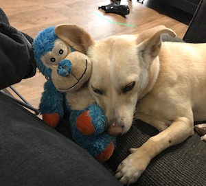
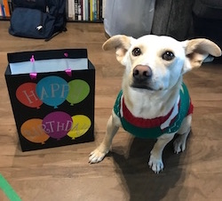
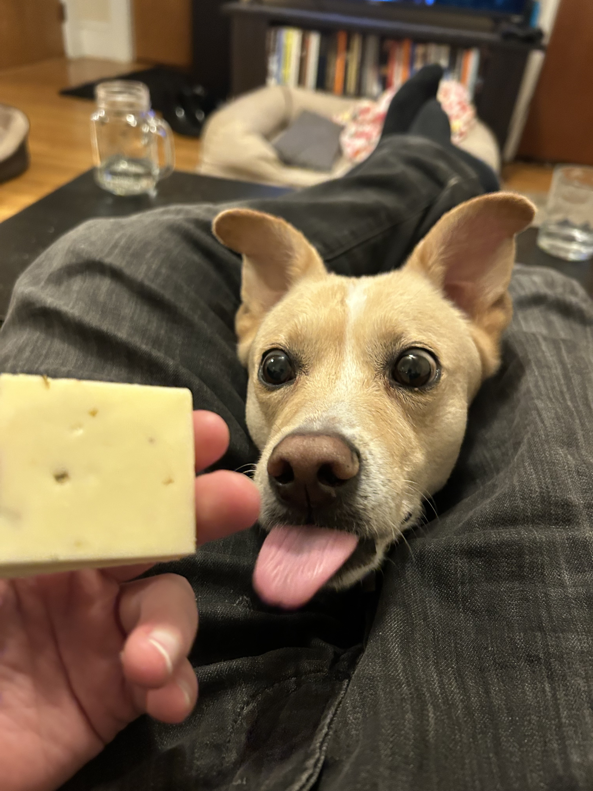
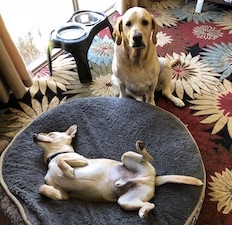

Miscellany
Blog Posts
- (Nov 2023) Bilevel Planning for Robots with Nishanth Kumar, Willie McClinton, and Kathryn Le
- (Jul 2023) What's Your Problem? An Oft-Missing Section in AI Papers
- (Mar 2021) Learning to Generate Abstractions for Faster Planning with Rohan Chitnis
- Part 1: Learning to Generate Context-Specific Abstractions for Factored MDPs
- Part 2: Learning to Generate Abstractions in Problems with Relational Structure
- (Apr 2018) Lessons from My First Two Years of AI Research
Dog Posts
 

